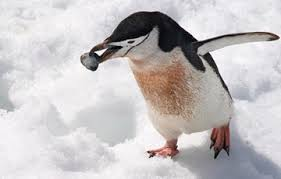

Penguins are popular and instantly recognizable birds, but they can also be finicky eaters with a restricted diet that is threatened by irresponsible practices. A better understanding of what penguins eat can help promote the protection and conservation of their food-rich habitats and give penguin rehabilitators more resources for successfully meeting these unique birds' dietary needs.
Common Foods
Penguins are carnivores with piscivorous diets, getting all their food from the sea and relying on clean, healthy seas for rich sources of nutritious prey. The exact foods different penguin species take depends on their range, bill size and shape, foraging behavior, and other factors, but the most common foods include:
Fish: Silverfish, lantern fish, sprats, pilchards, mullets, anchovies, sardines, cod, opal fish, and other small fish are the majority of most penguins' diets. Healthy populations of these types of fish are essential for penguins to thrive.
Crustaceans: Smaller penguins may eat large quantities of krill, and other crustaceans such as shrimp and crabs make up small parts of some penguins' diets.
Cephalopods: Occasional squid and cuttlefish make up a small part of some penguins' diets, particularly larger penguin species that are able to dive deeper while foraging.
Many penguins are opportunistic feeders and will sample a wide variety of different prey. They will adapt their feeding patterns to match what foods are most widely and easily available at different times of the year and in different parts of their range.
Hunting
When hunting, penguins catch their prey in their powerful jaws and swallow the creatures whole. They also have backward facing bristles on their tongues that helps slippery seafood from getting away. Penguins will dive anywhere between 50-60 ft. (15-18m) below the surface of the water. The depths to which they must go in order to hunt can vary dramatically between the seasons and even the day, as a result of variable sea conditions. Scientists have also observed penguins across all species intentionally swallowing stones. They believe this is intended to help reduce buoyancy when hunting, allowing them to dive deeper, as well as aiding the process of breaking down the food in their stomachs.

Fasting
Penguins go through annual fasting periods. Prior to fasting, penguins build up a fat layer, which provides energy. Penguins fast for prolonged periods during breeding seasons; they do not leave nesting areas to feed. Some penguins fast throughout the entire courtship, nesting, and incubation periods. Penguins also fast during annual molting periods. The temporary reduction in insulation and waterproofing caused by the loss of feathers during a molt prohibits penguins from entering the water to feed. Their fat layer provides energy until the molt is over.